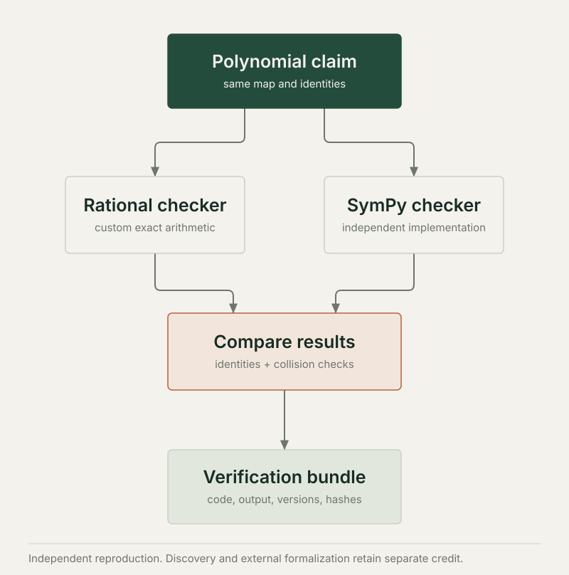

Project family · markets
Years of market experiments
Several projects explore data, recurring jobs, models, and the decisions between them. Follow what each one addresses.
botStufffinBotsrobinBots
Follow the projects →Sulemanji · experience direction · November 2026
Concrete work, independent interests, and enough context to understand the person behind them. These screens propose the complete experience, including material that workers can keep current.
Design proposal; not deployed
I’m Suleman, a services engineer in Houston. I work at Viyu and build independent tools. My interests also include markets, mathematics, and questions outside the day job.
Project family · markets
Several projects explore data, recurring jobs, models, and the decisions between them. Follow what each one addresses.
Published tool
Nodes that bring security findings into an automation workflow.
See the tool →Mathematics
An explanation and two independent computational routes.
Read and inspect →My background spans managed IT, infrastructure, migrations, and earlier work around cars. There is more to the story.
About me and my career →Design decision: Real project names carry the introduction. A larger feature and shorter entries give each subject an appropriate amount of space. These are proposed selections, not live recommendations.
I’m Suleman, a services engineer in Houston. I work at Viyu and build independent tools. My interests also include markets and mathematics.
Project family · markets
botStuff, finBots, and robinBots explore different parts of a continuing question.
Follow the projects →Published tool
Security findings in a workflow.
See the tool →Mathematics
An explanation and independent checks.
Read and inspect →Managed IT, independent projects, and some less predictable interests.
About me and my career →Mobile: One reading column. The portrait becomes smaller. Navigation remains a normal disclosure. No carousel, clipped card row, or automatic content shift.
Explore / Mathematics
Research explanation
A compact explanation, exact arithmetic, and independent checkers for a mathematical claim.
The work includes a rational-arithmetic checker and a SymPy checker. The explanation and source files let a reader inspect how the calculation is checked.
The figure belongs beside the explanation it supports. It shows how the checks relate, while the surrounding text explains their scope.

Discovery and external formalization remain credited to their authors. This account describes the reproduction and its supporting files.
Reading: A constrained text measure, nearby sources, and one explanatory figure. Long-form material can remain long when the subject requires it.
n8n-nodes-cavelo
Nodes for vulnerabilities, privacy findings, access audits, and benchmarks. The package also includes polling and pagination helpers.
Dark theme proposal
An astronomy guide can help someone enjoy the sky. It can remain an astronomy guide.
Read the skywatching article →About Suleman
Houston. Managed IT and infrastructure. Earlier work around cars. Independent interests in markets, mathematics, and genealogy.
Contact
Direct correspondence has a clear path. Business delivery has a separate destination at Viyu.
Format: Tool pages prioritize the available artifact. About preserves career access. Business contact appears when the reader chooses that need.
Explore
Projects, tools, writing, and experiments, with their sources attached.
How the questions develop across several implementations.
Bring security findings into a workflow.
Exact arithmetic and independent checkers.
Match the viewing tool to the night-sky target.
Data ownership: Stable content records reference existing pages. Relationships explain why two items connect. Explicit featured IDs control Home. Workers can maintain useful context without replacing authorship or publication history.